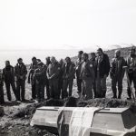
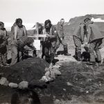
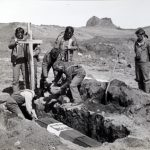

40 lat temu zmarł Włodzimierz Puchalski. Ten znany twórca filmów i fotograf przyrody był również polarnikiem. Brał udział w Wyprawach Polarnych zarówno na północ jak i na południe. W 1957 i w 1958 r. był na Spitsbergenie, a w 1978/79 brał udział w wyprawie na wyspę Króla Jerzego do Stacji im. H. Arctowskiego. Na wspomnianych wyprawach realizował filmy dla telewizji oraz Polskiej Kroniki Filmowej. Zespół medyczny przygotowujący ekipę do wyjazdu w 1978 roku był zdecydowanym przeciwnikiem uczestnictwa przyrodnika w wyprawie, ponieważ jego stan zdrowia nie był zadowalający. Decyzję o wyjeździe Włodzimierz Puchalski podjął na własne ryzyko. Dnia 19 stycznia 1979 roku nieopodal Polskiej Stacji Antarktycznej podczas wykonywania porannych zdjęć zasłabł, stracił przytomność i zmarł. Natychmiastowa pomoc medyczna nie pomogła. Został pochowany na wyspie, a jego grób został wpisany na listę obiektów historycznych Antarktyki.
Poniżej zdjęcia z pogrzebu Włodzimierza Puchalskiego wykonane przez Józefa Litwina w 1979 roku – dziękujemy za zgodę na zamieszczenie ich na stronach Klubu Polarnego. (Warto dodać, że pan Józef jest pierwszym w historii polskim pilotem, który wzniósł się polskim śmigłowcem nad Antarktyką. To pamiętne wydarzenie miało miejsce 12 grudnia 1978 roku.)
Zainteresowanych osobą Włodzimierza Puchalskiego odsyłamy do Zamku Królewskiego w Niepołomicach, gdzie mieści się stała wystawa, na której prezentowane są bogate zbiory jego fotografii, a wśród zgromadzonych prywatnych pamiątek znajduje się między innymi odznaka Klubu Polarnego PTG.
  
{kind=link}
{kind=link}
{kind=link}